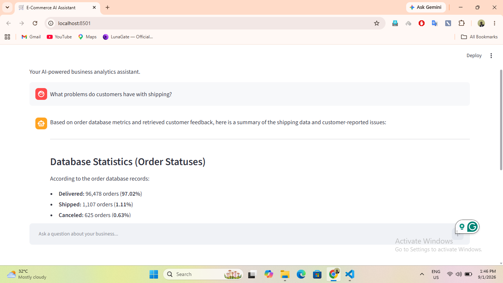
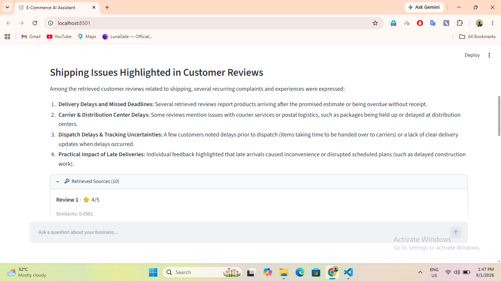

Two business questions, two kinds of evidence
Imagine an e-commerce manager asking, “Which product categories brought in the most revenue?” A useful answer needs actual transaction data, consistent calculations, and numbers that can be checked.
Now imagine the same person asking, “What delivery problems are customers describing?” Order totals alone can't answer that. The relevant evidence lives in customer reviews, written in everyday language.
Both questions belong in business analysis, but they need different approaches. I wanted to explore whether one conversational assistant could handle both without forcing the user to think about databases, search indexes, or the tools behind the scenes.
That question became my E-Commerce AI Assistant—a prototype combining SQL-backed tools for structured metrics and retrieval-augmented generation (RAG) for questions about customer experiences.
The research behind RAG is useful here: Lewis and colleagues (NeurIPS 2020) explored pairing a language model with retrieved information outside its parameters. The principle motivated my review-search path, but their experimental results do not validate my application or guarantee that its generated answers are faithful to retrieved reviews. [4]
Starting with the data
I used the Brazilian E-Commerce Public Dataset by Olist, published by the dataset provider, which describes anonymised order records from 2016–2018 and includes orders, payments, customers, products and reviews. [1] For structured analysis, I organised the relevant tables in DuckDB. For qualitative questions, I worked with over 40,000 cleaned customer-review documents, primarily written in Portuguese; that processed-review count describes my project's corpus, not the size claimed by the dataset publisher.
This mattered because the assistant wasn't meant to invent a plausible business story. It needed to distinguish between a database calculation and a review-based observation—and to communicate the difference clearly.
| Question | Evidence source | Approach |
|---|---|---|
| Which categories earn the most revenue? | Orders and order items | Predefined DuckDB tool |
| What share of orders were cancelled? | Order statuses | Predefined DuckDB tool |
| What frustrates customers about delivery? | Review text | FAISS + MMR + Gemini |
One interface, two routes
The app uses Streamlit as its chat interface and Gemini function calling to select an appropriate tool for a question. The model doesn't need to generate arbitrary SQL from scratch: it can call predefined Python functions for common business questions, which execute queries against DuckDB. For review questions, it can use a semantic-search tool.
Conceptual overview of the implemented tool paths
Why I used SQL tools for hard numbers
For questions about revenue or orders, I didn't want an LLM estimating numbers from general knowledge or
relying on a handful of retrieved documents. The backend provides specific analytics tools such as
get_category_revenue, get_order_status_summary, and
get_revenue_summary.
When a question requires a supported metric, Gemini can request a function call, my Python code executes it, and DuckDB returns the calculated result. Google's official documentation distinguishes a model's request for a custom tool from the application's execution of that tool; the model is not independently running arbitrary SQL. [3] DuckDB's own documentation shows how SQL query results can be returned to Python, which is the basis for this separation between calculation and explanation. [2]
This is a useful boundary, but not a proof of numerical correctness: joins, aggregation definitions and filtering decisions must still be tested. I should evaluate each tool's returned values against known SQL answers rather than assume tool-calling makes the numbers automatically accurate.
How the customer-review RAG pipeline works
Customer reviews are different. People can describe the same delivery experience in different words, so exact keyword matching isn't always enough. I created local multilingual embeddings with Sentence Transformers and used FAISS to retrieve semantically similar reviews.
Reimers and Gurevych's Sentence-BERT paper (EMNLP 2019) provides the research foundation for comparing sentences through dense embeddings rather than running a paired language model for every possible match. [5] The particular multilingual MiniLM model used in my project is not evaluated by that paper, so its quality on Portuguese customer reviews—and on English questions about those reviews—still needs project-specific testing.
FAISS implements similarity search over dense vectors. The FAISS researchers describe different index choices and their speed, memory and retrieval-quality trade-offs. [6] A highly ranked neighbour is mathematically close under the selected embedding and distance setup; that alone does not prove its relevance to the user's intent.
My retrieval pipeline first gathers more candidates than it will send to the language model. In the code, the candidate count is calculated as:
# Excerpt of the candidate-pool rule used in retrieval
candidate_count = max(top_k * 5, 50)From that pool, Maximal Marginal Relevance (MMR) selects reviews that balance relevance to the question with diversity from those already chosen. By default, the application selects eight reviews for the final context. This relevance-versus-redundancy objective comes from Carbonell and Goldstein's 1998 SIGIR work on diversity-based reranking. [7]
Why does this matter? In my manual exploration, several highly similar reviews could repeat essentially the same complaint. MMR was a reasonable way to try to reduce that repetition, without training another model. But I have not published a quantitative MMR-versus-top-k benchmark for this prototype. And diversity in retrieved examples must not be confused with statistical representativeness across all customers.
The selected reviews, along with their rating and similarity information, are available through an expandable Retrieved Sources panel in Streamlit. A reader can therefore inspect what supported the response instead of accepting a polished answer on trust.


Two problems that changed my approach
1. Generating embeddings at scale
I initially explored using Gemini's embedding API, but free-tier rate limits made the full review corpus impractical to process that way. I switched to local multilingual embeddings. That removed API-rate restrictions and per-request charges from the embedding step, while keeping Gemini for tool selection and response generation.
2. A relevant review does not guarantee a grounded answer
During manual testing, I noticed that the model could retrieve appropriate reviews and still add plausible details that weren't present in them—for example, a specific product-defect description that the evidence did not support.
I strengthened the system instructions so that the assistant distinguishes database facts from review observations, avoids unsupported claims like “most customers,” and acknowledges when the available evidence is insufficient.
Those prompting rules are a mitigation, not a guarantee. They still need systematic evaluation against known answers and source evidence. A related caution comes from Liu and colleagues (TACL 2024): in their long-context experiments, language-model performance varied with the placement of relevant information. [8] That study did not test my assistant, but it reinforces why supplying more context should not be treated as automatic assurance that a model will use it correctly.
What the prototype cannot claim
This project can answer supported quantitative questions through its implemented SQL tools and retrieve relevant customer experiences for qualitative questions. But review search returns a selected sample, not a census of customer opinions.
For example, several retrieved reviews mentioning late deliveries justify saying “some retrieved reviews describe delays.” They do not justify concluding that delivery delay is the most common complaint across all customers.
There's also a useful distinction between retrieval diversity and retrieval quality. MMR helped with redundant results in this prototype. If relevance becomes the bottleneck, I would evaluate a reranker rather than adding complexity without a demonstrated need.
What the research supports—and what it doesn't
I found it useful to separate established findings from the literature, my engineering choices and outcomes still requiring evaluation. Here is the distinction I want to preserve:
| Published finding or documented capability | How it informed my design | What remains unproven here |
|---|---|---|
| Retrieval can provide external evidence to language generation [4] | Retrieve reviews for qualitative questions | That every generated claim is supported |
| MMR balances query relevance with novelty [7] | Reduce duplicate complaints in the review context | Higher measured retrieval quality or a representative sample |
| RAG evaluation should assess retrieval and answer faithfulness separately [9] | Plan source-based tests and numerical checks | Any benchmark score or production impact |
My takeaway from reading the papers
A citation explains why a design is plausible; it does not certify that my implementation works. The right next step is a reproducible test set and transparent reporting of both successes and failures, not borrowing performance claims from someone else's experiments.
What I learned
- Choose the evidence source before explaining the answer. Exact metrics and customer experiences should not be handled as if they are interchangeable.
- Tool design is part of reliability. Predefined, inspectable SQL routines give the application a clearer boundary than invented figures.
- Retrieval is a design problem. A useful evidence set needs relevance and enough variety to avoid repeatedly showing the same story.
- Trust requires visible limitations. Transparent sources and careful wording are more important than confident-sounding summaries.
As I continue my MSc in Artificial Intelligence and Data Science, this project has reinforced something I want to carry into future ML and AI work: building an application that can produce an answer is only the beginning. The harder question is how to verify what supports it.
Where I would take it next
My next steps would focus on evaluation rather than adding more features. I'd build an annotated test set with expected tool choices, expected numerical results for SQL questions, and supporting review passages for qualitative questions. I would track tool-selection accuracy, retrieval relevance, answer faithfulness to the retrieved sources and unsupported-claim frequency. These are proposed evaluations, not results I have already measured.
Es and colleagues introduced RAGAs at EACL 2024 to evaluate RAG pipelines across retrieval and generation dimensions, including how faithfully an answer uses retrieved context. [9] Its framework is useful inspiration for an evaluation plan, but the current version of my project does not claim to implement RAGAs or achieve any RAGAs scores.
I'd also explore extracting and counting complaint themes across the full review corpus. That would create a better basis for genuinely quantitative customer-feedback questions, instead of asking a semantic sample to support population-level claims.
For me, E-Commerce AI Assistant is a working prototype—and a reminder that useful AI combines the right data, the right tools, and the discipline to say what the evidence cannot tell us.
Explore the project
The repository contains the Streamlit application, DuckDB analytics tools, RAG pipeline, source-code documentation and screenshots.
References and further reading
The links below lead to the original dataset listing, peer-reviewed publications, the FAISS research preprint and official vendor documentation. They support the specific background statements marked in this article. None of these external sources independently tests or validates my E-Commerce AI Assistant implementation; for that, see the linked project repository.
- Olist. Brazilian E-Commerce Public Dataset by Olist. Original dataset listing, Kaggle. View original dataset.Dataset publisher · Used for the corpus provenance and dataset scope
- DuckDB. Executing SQL in Python. Official documentation. Read documentation.Official documentation · SQL execution and fetching results in Python
- Google AI for Developers. Using tools with Gemini API. Official API documentation. Read documentation.Official documentation · Model requests a tool; application executes custom tools
- Lewis, P., et al. (2020). Retrieval-Augmented Generation for Knowledge-Intensive NLP Tasks. Advances in Neural Information Processing Systems 33 (NeurIPS 2020). Read published paper.Peer-reviewed conference paper · Retrieval-based external context for generation
- Reimers, N., & Gurevych, I. (2019). Sentence-BERT: Sentence Embeddings using Siamese BERT-Networks. EMNLP-IJCNLP 2019, pp. 3982–3992. DOI: 10.18653/v1/D19-1410.Peer-reviewed conference paper · Semantically meaningful sentence embeddings; not a benchmark of this project's specific multilingual model
- Douze, M., et al. (2024; revised 2025). The Faiss library. arXiv:2401.08281. Read FAISS research preprint.Research preprint · Vector-search indexing choices and trade-offs; not described here as peer-reviewed
- Carbonell, J., & Goldstein, J. (1998). The use of MMR, diversity-based reranking for reordering documents and producing summaries. Proceedings of the 21st Annual International ACM SIGIR Conference, pp. 335–336. DOI: 10.1145/290941.291025.Peer-reviewed conference paper · Relevance/diversity balancing through MMR
- Liu, N. F., et al. (2024). Lost in the Middle: How Language Models Use Long Contexts. Transactions of the Association for Computational Linguistics, 12, pp. 157–173. DOI: 10.1162/tacl_a_00638.Peer-reviewed journal article · Relevant-context position can affect model performance in studied tasks
- Es, S., James, J., Espinosa Anke, L., & Schockaert, S. (2024). RAGAs: Automated Evaluation of Retrieval Augmented Generation. EACL 2024 System Demonstrations, pp. 150–158. DOI: 10.18653/v1/2024.eacl-demo.16.Peer-reviewed conference demonstration paper · Separating retrieval quality from answer faithfulness
Project-specific architecture, observations and limitations are based on the public E-Commerce AI Assistant repository, not independent findings from the cited papers.
Want to discuss this approach? I'd be interested to hear how you evaluate evidence grounding in RAG applications. Connect with me on LinkedIn.